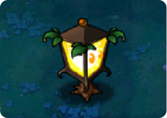

Back to Plants

Plantern
 25
25
 Gives light
Gives light
 Slow
Slow
 Normal
Normal
Level Acquired:
Level 1-10
Plantern defies science. He just does. Other plants eat light and excrete oxygen; Plantern eats darkness and excretes light. Plantern's cagey about how he does it. "I'm not gonna say 'sorcery,' I wouldn't use the term 'dark forces,' I just... I think I've said enough."
Plant Description
- Plantern is an unlockable plant in Plants vs. Zombies as an environment modifier whose purpose is to clear fog which obscures the player's vision.
- Plantern is obtained in the Fog area, specifically after beating the first level, and will illuminate and disperse a large area of fog (5x7), allowing the player to see approaching zombies and their own defense within the cleared radius.
- Technically, like the Grave Buster, the Plantern is not actually a Night plant. Because he is not a mushroom, he does not need to be planted in the Mushroom Garden to grow.
Strategies
- It is a good idea to put Planterns behind defensive plants such as Wall-nuts or Garlic, or inside a Pumpkin, to prevent them from being eaten if you can. The player should plant only two Planterns in a level, place him near the pool on the fourth row to the right side of the lawn.